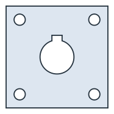
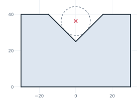
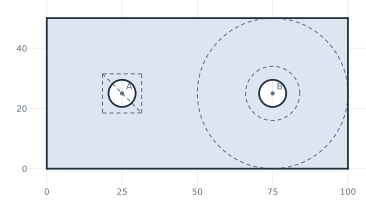
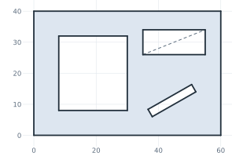

Circles and rectangles
A circle is drawn around the pen or a given center, or placed by references to other elements. It is one exact edge, a real circle with no vertices on it, so nothing splits it until another edge crosses or touches it. A rectangle is drawn from the pen along its direction, from two corners, or around a center.
[1]:
import math
import planex as px
A square flange with a keyed bore
The example is a plate of 60 × 60 with four bolt holes of 6.6 on a 44 square and a bore of 20 with a DIN 6885 hub keyway, 6 wide and 2.8 deep (Figure 1). The plate and its bolt holes are one sketch: RectangleC(60, 60) centers the plate on the origin, and a loop draws the holes. The keyed bore is a second face, the bore united with the keyway, and it is subtracted from the plate. The keyway is a rectangle 6 wide from the pen at (−3, 0), up to 2.8 beyond the bore.
[3]:
plate = px.QuickSketch().RectangleC(60, 60)
for x in (-22, 22):
for y in (-22, 22):
plate.Circle(x, y, 3.3)
keyed_bore = px.Circle((0, 0), 10).Face() + px.QuickSketch((-3, 0)).Rectangle(6, 12.8).Face()
flange = plate.Face() - keyed_bore

The keyway overlaps the bore in a circular segment, so the area of the cut-out is the bore plus the keyway minus that segment:
[5]:
overlap = 3 * math.sqrt(10**2 - 3**2) + 10**2 * math.asin(6 / 20)
print("area", flange.mass, "exact", 60**2 - (math.pi * 10**2 + 6 * 12.8 - overlap) - math.pi * 6.6**2)
area 3131.280400094698 exact 3131.2804000946976
Circles from references
A circle needs a center and a radius, and both can come from references:
the center from
center=(a point or a point id) or fromconcentric=(the center of another circle or arc);the radius as a number, from
congruent=(the radius of another circle), fromthrough=(a point on the circle) or fromtangent=(an edge the circle touches).
A measuring pin in a V-block
The example is a 90° V-block, 60 wide and 40 high, with a groove 30 wide, so its apex lies 15 below the top. A measuring pin of radius 8 lies in the groove and touches both flanks. Circle(8, tangent=("left flank", "right flank")) finds its center, and the pin is drawn dashed, as a construction circle (Figure 2). The pin’s center lies r / sin 45° above the apex, and the height over the pin is how such a groove is inspected.
[6]:
v = px.QuickSketch((-30, 0))
v.Line((30, 0), id="base").Line((30, 40), id="right side")
v.Line((15, 40), id="right top").Line((0, 25), id="right flank")
v.Line((-15, 40), id="left flank").Line((-30, 40), id="left top")
v.Close(id="left side")
v.Circle(8, tangent=("left flank", "right flank"), id="pin", construction=True)
m = v.Measure("pin")

[8]:
center = 25 + 8 / math.sin(math.radians(45))
print("pin center", m["center"][1], "exact", center)
print("over the pin", m["center"][1] + m["radius"], "exact", center + 8)
pin center 36.31370849898476 exact 36.31370849898476
over the pin 44.31370849898476 exact 44.31370849898476
Holes placed by references
The example is a bracket leg of 100 × 50 with two bolt holes of 9 at the points A and B, 25 from the ends (Figure 3). Hole A gets its radius as a number, and hole B is congruent to it, so both change together. Around hole B, three construction elements check the design: a washer circle concentric with the hole, the circle around B that touches the right side, whose radius is the edge distance, and a nut pocket, a square of 13 centered on A.
[9]:
s = px.QuickSketch()
s.Line(100, id="bottom").Turn(90).Line(50, id="right")
s.Turn(90).Line(100, id="top").Close(id="left")
s.Vertex("A", (25, 25)).Vertex("B", (75, 25))
s.Circle(4.5, center="A", id="hole A")
s.Circle(center="B", congruent="hole A", id="hole B")
s.Circle(9, concentric="hole B", id="washer B", construction=True)
s.Circle(center="B", tangent="right", id="edge distance", construction=True)
s.RectangleC(s("A"), 13, 13, id="nut pocket", construction=True)
leg = s.Face()

The edge distance comes out as 25, the distance from B to the right side:
[11]:
for ref in ("hole B", "washer B", "edge distance"):
m = s.Measure(ref)
print(ref, "center", m["center"][:2], "radius", m["radius"])
print("area", leg.mass, "exact", 100 * 50 - 2 * math.pi * 4.5**2)
hole B center (75.0, 25.0) radius 4.5
washer B center (75.0, 25.0) radius 9.0
edge distance center (75.0, 25.0) radius 25.0
area 4872.765497529614 exact 4872.765497529614
Rectangles from corners and around a center
A rectangle has four forms:
Rectangle(l, w)starts at the pen and runs along its direction;Rectangle(p0, p1)takes two opposite corners in any order, with its sides along h and v;Rectangle(p0, p1, p2)takes the side from p0 to p1 and a point p2 on the opposite side, so it may be turned;RectangleC(l, w)is centered at the pen, andRectangleC(center, l, w)at a point, with l along the drawing direction.
The pen stays where it is for the corner forms and moves to the center for RectangleC. The example is a lid of 60 × 40 with a window from two corners, a label recess of 20 × 8 around a point, and a tilted slot for a key, given by one side and a point on the opposite side (Figure 4).
[12]:
lid = px.QuickSketch().Rectangle(60, 40, id="lid")
lid.Rectangle((8, 8), (30, 32), id="window")
lid.RectangleC((45, 30), 20, 8, id="label")
lid.Rectangle((38, 6), (52, 14), (50, 16), id="key")
cover = lid.Face()

The tilted slot’s width is the distance of p2 from the line through p0 and p1:
[14]:
side = math.dist((38, 6), (52, 14))
width = abs((52 - 38) * (16 - 6) - (14 - 6) * (50 - 38)) / side
print("key slot", side, "×", width)
print("area", cover.mass, "exact", 60 * 40 - 22 * 24 - 20 * 8 - side * width)
key slot 16.1245154965971 × 2.7287641609625863
area 1668.0 exact 1668.0